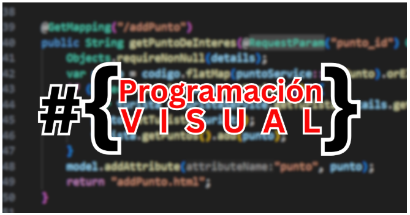
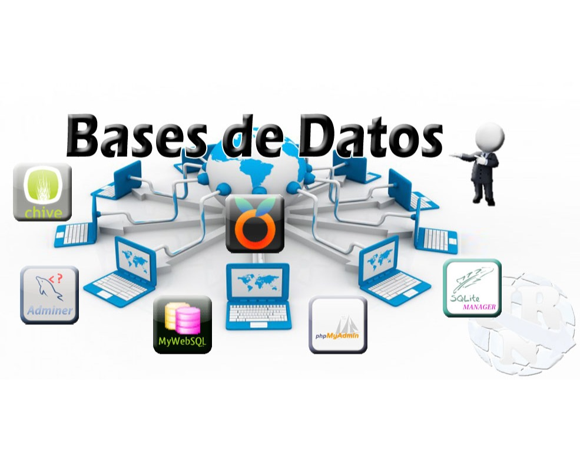

TP1 de Programación Visual

Descripcion: La programación visual (VPL) es un paradigma que permite crear software manipulando elementos gráficos (bloques, nodos, iconos) en lugar de escribir código de texto. Facilita la creación de lógica mediante arrastrar y soltar, siendo ideal para principiantes, educación y prototipado rápido, eliminando la complejidad de la sintaxis textual.
Categoria: Wed
Ver detalleActividad 1 de Base de Datos II

Descripcion: Va a empezar a crear su primera base de datos Oracle. Debe tener en cuenta que en un futuro cercano, será necesario crear varias bases de datos similares. Por lo tanto, decide crear su base de datos ORCL, así como una plantilla de base de datos y los archivos de comandos de creación de la base de datos. Los archivos de comandos se localizan en el directorio: /home/Oracle/labs VISIÓN GENERAL DE PRÁCTICA: USO DE DBCA En esta práctica se abordan los siguientes temas: • Creación de una base de datos ORCL mediante DBCA. • Desbloqueo del esquema HR.
Categoria: Wed
Ver detalleTP1 de Redes
Descripcion: Definiciones y Conceptos Básicos de Redes y Transmisión de datos. Definición de Red de Computadoras. Tipos de Redes. a_ Según ubicación geográfica: LAN (Definición). WAN (Definición). b_ Según la forma en que se comparten los recursos: Par a Par (Definición). Cliente-Servidor (Definición). Ventajas y desventajas de cada tipo.
Categoria: PDF
Ver detalleCuestionarios de Programacion estructurada
Descripcion: Los cuestionario son un requisito para poder rendir los parciales y deben aprobar con el 60% o mas. Los cuestionario tiene los contenido de cada trabajos practicos
Categoria: Web
Ver detalleCartilla de ingles III

Descripcion: Para la cursada se debe tener la cartilla impresa para realizar los ejercicio. La cartilla combina gramática, vocabulario y práctica comunicativa aplicada al contexto de la programación
Categoria: PDF
Ver detalle